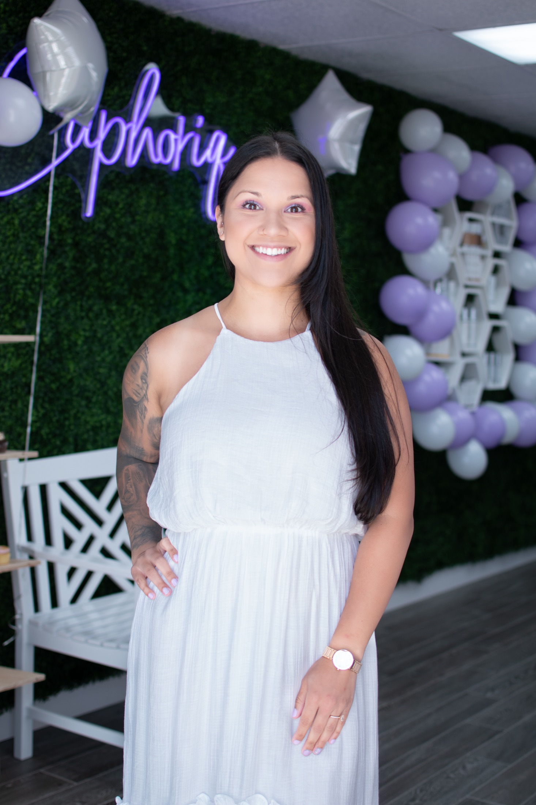

Meet Katherine
She had the skin she treats.
A woman-owned studio in downtown Sumner, run by one licensed esthetician who got into this by fixing her own skin first.
“Like many others, I have struggled with my skin and worked hard to find solutions; this is what led to my decision to become an Esthetician. As I learned more about skin, my passion grew along with my knowledge.”
Katherine Matthews trained at the Euro Institute and opened Euphoriq as a one-room studio where every appointment is hers — the consult, the treatment, the aftercare talk. Her clients mention the same things: she explains what she's doing and why, she sends you home knowing what to use, and she knows skin that other places get wrong.
“As your Esthetician, I will always have your best interest in mind.”